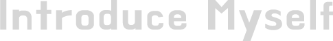

로고

로고
로고
서울시립대학교에서 매달 새로운 회원을 등록하는 업무가 있었는데, 선착순으로 접수하는
방식이라 등록을 하기 위해 학생들이 줄을 서서 저녁 9시부터 아침 9시까지 총 12시간을
대기실도 없이 밖에서 기다려야 하는 불편함이 있었습니다. 이런 비효율적인 행정 관행으로
학생들이 원성이 자자했고, 이것을 변화시키기 위해 저는 충분한 자료 조사 및 설문조사를
한 뒤, 월례회의 때 담당 부서 과장님께 기존에 운영하던 선착순 제도를 학생들과
행정업무와의 유연한 업무처리를 위해 추첨제로 변경하는 것을 제안하였습니다. 그 결과,
추첨제도로 변경이 되었고 학생들의 불편함이 해결되었습니다.
지금도 제가 공부하고 있고 지원하려는 업무는 웹퍼블리싱이지만 여기에 멈추지 않고 계속
개발되는 언어들, 나아가서 프론트 엔드 공부까지 계획하고 있습니다. 그리고 웹퍼블리싱을
포함한 프론트엔드 공부는 답이 정해져 있지 않기 때문에 어떠한 문제가 생겨도 유연한
사고로 처리하는 인재가 되기 위해 노력해왔고 앞으로도 노력할 것입니다.
로고
저의 장점은 ‘소통능력과 배려심’입니다. 자신의 이익보다는 항상 남을 먼저
생각하기에 대인관계도 원만한 편입니다. 남녀노소 불문하고 모든 사람과 잘
어울리며 상대방의 의견을 존중하고 진실하게 대합니다. 또한, 남의 고민을 잘
들어주기 때문에 마음을 열고 의논하는 친구들이 많은데 그럴 때마다 상대방의
입장이 되어 해결해 주려고 노력합니다.
마지막 직장이였던 고구마학원에서 제가 맡은 업무는 원장님 비서 업무여서
학생들 또는 학부모들과 마주칠 일은 없었지만 컴플레인이 들어올 때마다 나서서
대화를 하면서도 불만을 많이 듣고 해결해드리려고 노력하였습니다. 처음엔 화를
많이 내시던 분들도 제가 노력하는 모습을 보시고는 화를 많이 가라앉히시고
돌아가셨습니다. 그 후로 저를 기억하시고 많이 찾아주셔서 뿌듯했던 경험이
많이 있었습니다.
웹퍼블리싱은 개발자와 디자이너와 같이 협업을 하는 중간에 위치한 직업입니다.
소통이 정말 필요한 직무이기 때문에 제가 경험했던 사회 경험들을 밑바탕으로 향후
회사 업무에 잘 융화되어 회사에 없어선 안 될 인재가 될 것입니다.
로고
학창시절 부모님은 공부하라는 말씀은 하지 않으셨지만, 거짓말을 하는 것은 절대
용납하시지 않으셨습니다. 어느 곳에서 누구를 만나든 그 상대에게 신뢰감을 줄 수
있다면, 그 사람에게 무엇을 부탁하고 맡기고 의지하든 문제가 될 것이 없다고
생각하시기 때문입니다. 이 말씀은 지금도 마음에 남아 신뢰감을 주는 사람이 되기
위한 부단히 노력하고 있습니다.
또한 저에게 항상 ‘책임감’과 ‘성실함’을 강조하셨습니다. 초등학교, 중학교,
고등학교까지 한 번도 결석해 본 적이 없습니다. 12년 동안 한 번도 놓친 적이
없는 개근상은 성실함의 당연한 결과물이었습니다. 부모님의 가르침으로 제가 맡은
일은 투철한 책임감을 느끼고 완벽하게 해낼 수 있었습니다.
지금도 인생을 살아가면서 가장 기본적인 자세인 정직, 책임감, 근면성을 가슴에
품고 끊임없이 노력하며 살아왔습니다. 또한, (주)와이엠코리아어패럴에서는 책임감을
인정받아 팀장으로 승진하기도 하였습니다.